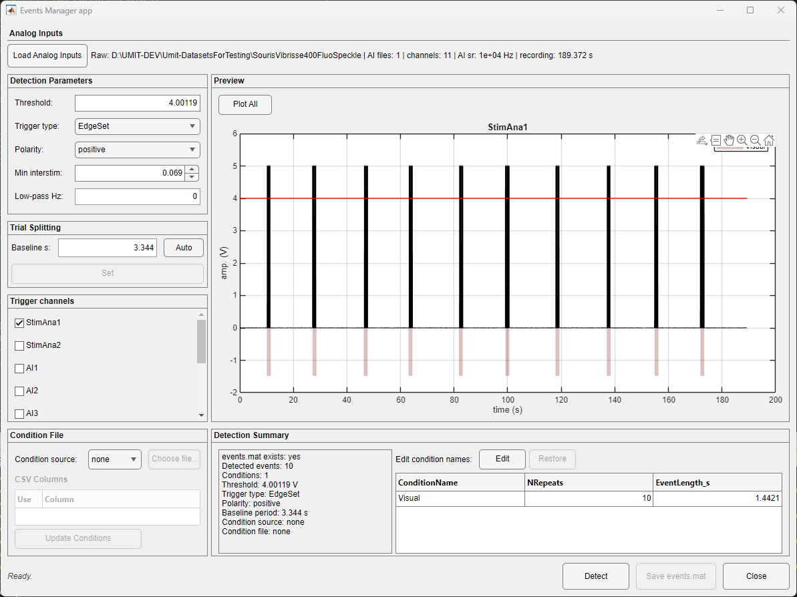
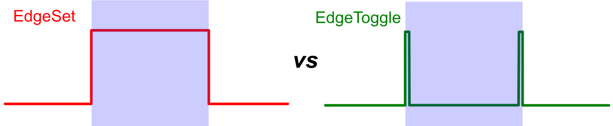

Events Manager is dedicated to visualizing and detecting events stored in analog inputs from LabeoTech imaging systems. It can detect events generated by the imaging system itself or received from external hardware, such as TTL signals and photodiodes. The final goal is to create a validated events.mat in the Save Folder. See the advanced user resource Events for the file structure and programmatic use.
Open continuous .dat data and choose Utilities > Events Manager. DataViewer supplies the Save Folder and its Raw Folder when available. The GUI currently reads LabeoTech ai_*.bin analog-input files; advanced users can process another signal with the EventsManager class in MATLAB.

| Group | Controls and meaning |
|---|---|
| Analog Inputs | Load Analog Inputs reads analog sources; the status lists sampling rate, channels, and duration. |
| Detection Parameters | Threshold (or auto), Trigger type, Polarity, Min interstim, and optional Low-pass Hz. |
| Trial Splitting | Baseline s, Auto, and Set establish the pre-event period. |
| Trigger channels | Selects one or more analog channels used for detection. |
| Condition File | none, CSV, or supported external parser; CSV columns can be selected before Update Conditions. |
| Preview | Plots signal, threshold, detected intervals, and all selected channels. |
| Condition names | Edit/Apply changes names in memory; Restore returns to the original list or cancels editing. |
| Detect | Applies parameters and rebuilds detected events. |
| Save events.mat | Writes validated current event state, asking before replacement. |
| Parameter | Use |
|---|---|
| Threshold | The voltage crossing used to detect an edge. Auto starts at 80% of the signal span above its minimum; set a number when noise or an unusual pulse amplitude requires manual control. |
| Trigger type: Edge Set | A crossing in the chosen polarity starts an event and the opposite crossing ends it. Use this for pulses whose high or low duration defines the event. |
| Trigger type: Edge Toggle | Successive crossings in the chosen polarity alternate between event ON and OFF. Use this when only one edge is recorded for each state change. |
| Polarity | Positive detects upward onset crossings; Negative detects downward onset crossings. |
| Min interstim | Merges closely spaced detections into one burst event when they fall within this number of seconds. |
| Low-pass Hz | Optionally removes faster fluctuations before threshold detection. Use 0 to disable filtering. |

The Baseline s value adds a pre-event period before every event onset. The rest of the trial extends from the onset to the imaging frame immediately before the next event onset. In other words, trial length is the baseline duration plus the interval from the current onset to just before the following onset. Review the shortest spacing between events before choosing a baseline that would overlap another trial.
Auto sets the baseline to 20% of the shortest interval between detected event onsets. If only one onset exists, it uses 20% of the remaining analog-recording duration after that onset.
The detected pulses define when trials occurred; a condition file can describe what happened on each trial. Choose none when the trigger channel itself represents one condition. For CSV input, select the column containing the ordered condition values, then choose Update Conditions. The number and order of condition rows must match the detected trials after any incomplete boundary events have been removed. Supported stimulus-specific parsers can be selected when their source format is available.
Unsaved changes
Closing with unsaved event edits asks for confirmation. DataViewer does not silently write event metadata.
Field definitions are in Events.